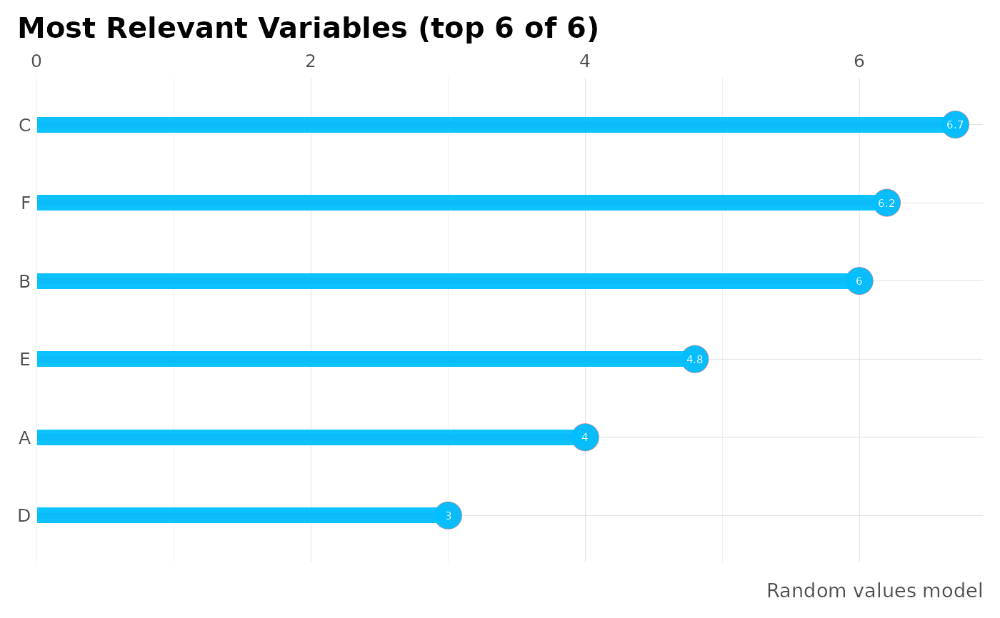

This function plots Variable Importances
mplot_importance( var, imp, colours = NA, limit = 15, model_name = NA, subtitle = NA, save = FALSE, subdir = NA, file_name = "viz_importance.png" )
Arguments
| var | Vector. Variable or column's names |
|---|---|
| imp | Vector. Importance of said variables. Must have same length as var |
| colours | If possitive and negative contribution is known |
| limit | Integer. Limit how many variables you wish to plot |
| model_name | Character. Model's name |
| subtitle | Character. Subtitle to show in plot |
| save | Boolean. Save output plot into working directory |
| subdir | Character. Sub directory on which you wish to save the plot |
| file_name | Character. File name as you wish to save the plot |
See also
Other ML Visualization:
mplot_conf(),
mplot_cuts_error(),
mplot_cuts(),
mplot_density(),
mplot_full(),
mplot_gain(),
mplot_lineal(),
mplot_metrics(),
mplot_response(),
mplot_roc(),
mplot_splits(),
mplot_topcats()
Examples
options("lares.font" = NA) # Temporal df <- data.frame(variable = LETTERS[1:6], importance = c(4,6,6.7,3,4.8,6.2)/100, positive = c(TRUE,TRUE,FALSE,TRUE,FALSE,FALSE)) head(df)#> variable importance positive #> 1 A 0.040 TRUE #> 2 B 0.060 TRUE #> 3 C 0.067 FALSE #> 4 D 0.030 TRUE #> 5 E 0.048 FALSE #> 6 F 0.062 FALSEmplot_importance(var = df$variable, imp = df$importance, model_name = "Random values model")# Add a colour for categories mplot_importance(var = df$variable, imp = df$importance, colours = df$positive, limit = 4)